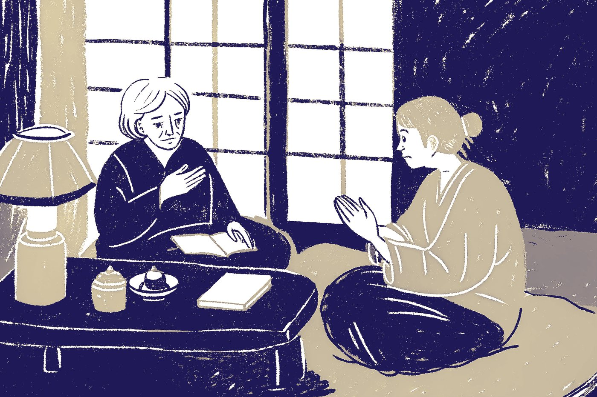

お仕事 ／ 家のことの窓口
電球ひとつから、
実家の片づけまで。
どこに頼めばいいか分からない家のことを、窓口ひとつでお受けします。
「こんなことで頼んでいいのかな」と思うことほど、どうぞ。
ここに無いことも、まず聞いてみてください。

頼みやすい理由
頼みやすい、3つの理由。
小さなことほど、歓迎です。
電球ひとつ、網戸一枚。「こんなことで呼んでいいのかな」と思うことを、お受けするための窓口です。
頼む先で、迷わなくて大丈夫です。
どこに頼むかを探すのは、こちらの仕事です。ご連絡の先は、ひとつで済みます。料金と責任の範囲を先に決めます。
金額は、作業の前に。
作業を始める前に、金額をお伝えします。ご納得いただいてから、日程を決めます。その場でお決めいただく必要はありません。
ご本人からも、ご家族からも
おひとりでも、離れて暮らすご家族からでも。
お話しするのが苦手でも、大丈夫です。ゆっくり伺います。
「お名前と、町と、困っていること」だけ教えてください。あとは、こちらから伺います。ご自分で書くのがむずかしいときは、ご家族に代わりに送ってもらってかまいません。
「実家の電球が切れたまま」「庭が荒れてきた」。親御さんの代わりのご相談も、お受けします。
ご本人への連絡の仕方（連絡する時間帯、玄関での名乗り方）は、先にご相談のうえで決めます。ご希望があれば、ご家族にも同時にご連絡します。
窓口になる人
「誰に頼むか」を、引き受けます。
逗子に住む、暮らしの困りごと編集室の主宰者です。編集の仕事を続けてきました。
電球が切れた。草が伸びた。ひとつひとつは小さなことでも、「誰に」と考えると、つい後回しになります。その「誰に」を引き受け、頼む先を探し、金額を先にお伝えする窓口でありたいと考えています。
逗子・鎌倉・葉山の家のことで困ったら、どうぞご相談ください。
暮らしの困りごと編集室 Local Edit 主宰者 鈴木隆文 （主宰者について）
よくあるご質問
気になることは、ここで。
電球ひとつでも、来てもらえますか。
はい。小さなことほど、ご相談ください。ついでに「ほかにも気になっていること」があれば、まとめて伺います。
いくらかかるのか、先に分かりますか。
はい。作業を始める前に金額をお伝えし、ご納得いただいてから日程を決めます。目安は、各お仕事のページでご覧いただけます。
一人暮らしですが、知らない人を家に入れるのが不安です。
伺う前に、担当する人の名前・日時・作業の目的をお知らせします。ご家族の立ち会いや、ご家族への同時連絡もできます。
家族が代わりに相談しても、いいですか。
はい。離れて暮らすご家族からのご相談もお受けします。ご本人への連絡の仕方は、先にご相談のうえで決めます。
どの地域に来てもらえますか。
逗子・葉山・鎌倉です。ご相談される方は、遠方にお住まいでもかまいません。
ご相談のあと
どう進むかは、「ご利用の流れ」で。
ご相談から、お見積もり、作業、作業のあとの報告までの流れを、まとめてあります。
家のことは、まず、聞いてみてください。
「こんなことで」と思うことほど、どうぞ。お名前と町と、困っていることだけ、教えてください。
お電話 090-6513-2925 Webで相談する